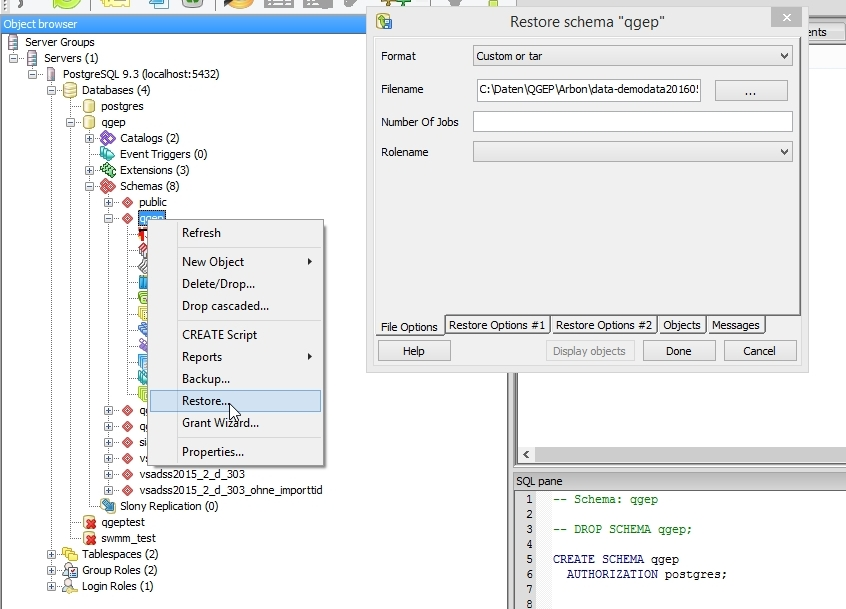

3. Initialisierung der Datenbank¶
Für die Konfiguration der Datenbank können sie pgAdmin verwenden.
Bemerkung
Mit diesem Link können sie lernen wie man Installation von pgAdmin benutzt.
3.1. Vorgehen¶
In pgAdminIII oder pgAdmin4
Verbinden Sie sich mit dem Datenbankserver
Erzeugen sie eine neue Gruppenrolle (vorzugsweise mit dem Namen ‘qgep’; sie können aber auch einen anderen Namen wählen)
Erzeugen sie eine neue Login Rolle (Login Roles) mit Name qgepuser (zum Beispiel) und fügen sie diese zur qgep Gruppe hinzu.
Sie können dies grafisch tun oder Sie öffnen ein SQL-Fenster in pgAdminIII und tippen folgenden Text ein:
CREATE GROUP qgep;
CREATE ROLE qgepuser LOGIN;
GRANT qgep TO qgepuser;
Erzeugen sie eine neue Datenbank mit UTF8-Codierung (vorzugsweise mit Name ‘qgep’; sie können aber auch einen anderen Namen wählen)
Wechseln Sie in diese Datenbank
Öffnen sie ein neues SQL-Fenster und erzeugen Sie die folgenden Extensions (wenn sie nicht schon existieren):
CREATE EXTENSION hstore;CREATE EXTENSION postgis;
3.1.1. Demodaten einrichten¶
Das aktuelle Datenbank-Schema mit dem Demodatensatz einrichten
Herunterladen der Demodaten * https://github.com/QGEP/datamodel/releases/latest * download qgep_vx.y.z_structure_and_demo_data.backup
Zurück in pgAdmin, auf das Schema qgep rechtsklicken
‘Restore’ wählen
Laden sie ihren Download von qgep_vx.y.z_structure_and_demo_data.backup
Restore Options #2: aktivieren sie Clean before restore

‘Restore’ wählen

Überprüfen Sie ob die letzte Linie im Nachrichtenfenster : Exit Code 0 ist
“pg_restore: [archiver] unsupported version (1.13) in file header” resp. in Deutsch “pg_restore: [Archivierer] nicht unterstützte Version (1.13) im Dateikopf” updaten sie PostgreSQL, vgl. https://stackoverflow.com/questions/49064209/getting-archiver-unsupported-version-1-13-in-file-header-when-running-pg-r
‘Cancel’ wählen
Recktsklick auf die Datenbank und ‘Refresh’ wählen
Es sind jetzt 4 Schemata vorhanden (qgep_od, qgep_sys, qgep_vl, qgep_import)
Aktualisiere die Zugriffrechte der qgep_od, qgep_sys und qgep_vl Schemata
Auf das Schema qgep_od rechtsklicken.
Eigenschaften -> Sonderrechte (Privileges) Tab > bewilligen Sie “USAGE” für Gruppe “qgep”.
Recktsklick auf das das Schema ‘qgep’; ‘Grant Wizard ...’ wählen
Menü ‘Selection’; ‘Check all’ wählen
Menü ‘Privileges’
Group ‘qgep’ wählen
‘ALL’ aktivieren
Wiederhole die oben für das qgep_od-Schema beschrieben Schritte auch für das qgep_sys und für das qgep_vl Schema
Mit der folgenden Query ist das Anpassen der Sonderrechte einfacher:
GRANT USAGE ON SCHEMA qgep_od TO GROUP qgep; GRANT USAGE ON SCHEMA qgep_sys TO GROUP qgep; GRANT USAGE ON SCHEMA qgep_vl TO GROUP qgep; GRANT ALL ON schema qgep_od TO postgres; GRANT ALL ON schema qgep_sys TO postgres; GRANT ALL ON schema qgep_vl TO postgres;
3.1.2. Leeres Datenbank-Schema¶
Es ist auch möglich, ein leeres Datenbank-Schema zu erstellen (ohne Demodatensatz).
Herunterladen das Datenbank-Schema unter https://github.com/QGEP/datamodel/releases/latest, und der Datei qgep_vx.y.z_structure_with_value_lists.sql.
An Stelle von “restore” der Demodaten ist es auch möglich, einfach das Datenmodell zu erzeugen
3.1.3. Erzeugen des Datenmodells¶
Es ist auch unter LINUX möglich das Datenmodell zu erzeugen
Download des Datenmodells
git clone https://github.com/QGEP/datamodel cd datamodel
Anpassen des Konfigurationsfile “pg_service.conf” und setzen des Service auf “pg_qgep”, siehe “pg_service-linux”
Erzeugen der Datenbank
psql -U postgres -c 'CREATE DATABASE qgep;'
Starten Sie das Skript:
./scripts/db_setup.sh
Wenn Sie eine andere SRID verwenden möchten, dann benutzen Sie die -s option. Zum Beispiel ./scripts/dbsetup.sh -s 2056 für SRID 2056.
Wenn Sie schon ein Datenmodell haben und dieses erneut erzeugen möchten, dann nutzen Sie die -f` Option: ./scripts/db_setup.sh -f.
Sie können die -r Option nutzen, um die folgenden Rollen hinzuzufügen (qgep_viewer, qgep_user, qgep_manager, qgep_sysadmin).
Viewer: Kann Tabellen und Views anschauen.
User: Kann Daten editieren.
Manager: Kann Daten und Wertebereiche bearbeiten.
Admin: Datenbank Administrator.